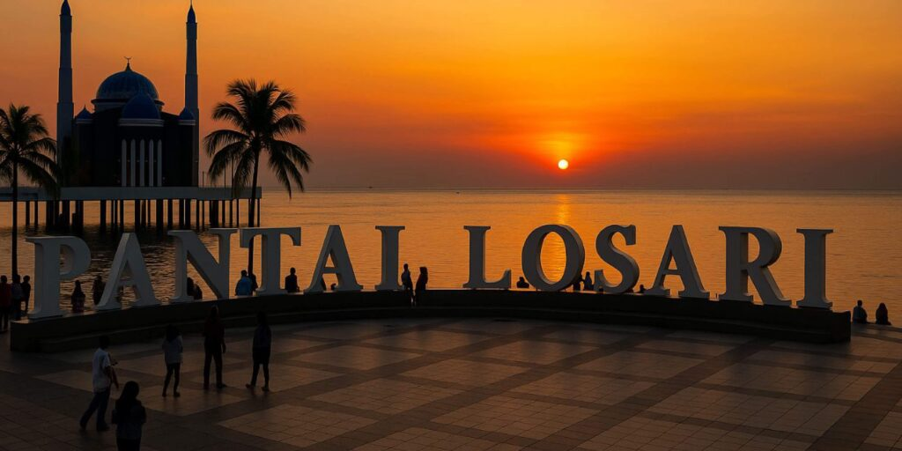
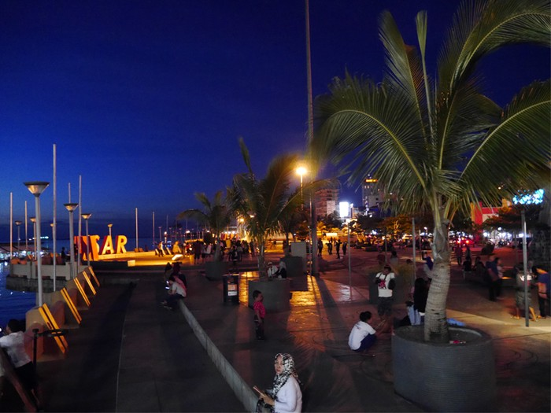
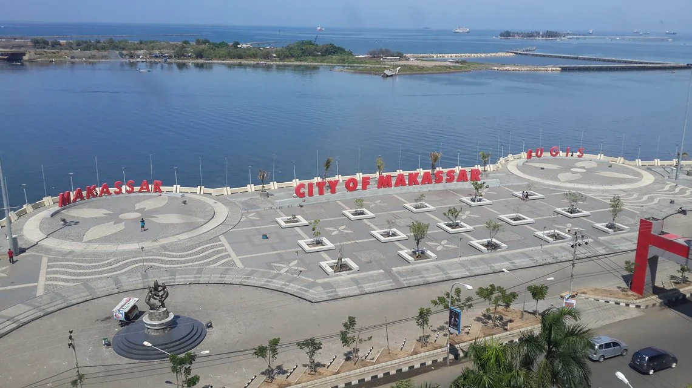

Tentang Pantai Losari
Pantai Losari adalah salah satu pantai terpopuler di Makassar, Sulawesi Selatan. Pantai ini terkenal dengan pemandangan sunrise dan sunset yang memukau, serta menjadi tempat favorit warga lokal dan wisatawan untuk bersantai di sore hari.
Nama "Losari" berasal dari kata "lo sarri" dalam bahasa Bugis yang berarti "tidak ada yang lain" atau "tidak ada duanya". Pantai ini membentang sepanjang kurang lebih 2 kilometer dengan pasir hitam yang khas.
Keunikan Pantai Losari
- Pemandangan sunset yang spektakuler
- Pasir hitam vulkanik yang unik
- Kuliner khas Makassar seperti pisang epe dan Coto Makassar
- Lokasi strategis di pusat kota Makassar
- Tempat berkumpulnya masyarakat lokal
Galeri Foto



Aktivitas yang Bisa Dilakukan
Aktivitas Populer
- Menikmati sunset di tepi pantai
- Berjalan-jalan di sepanjang pantai
- Berfoto dengan latar belakang laut
- Menyewa kuda untuk berkeliling pantai
- Bersepeda di area pantai
Kuliner Khas
- Pisang Epe (pisang bakar khas Makassar)
- Coto Makassar
- Jalangkote
- Pallubasa
- Es Palubutung
Fasilitas Tersedia
- 1. Parkir
- Tersedia area parkir luas untuk kendaraan roda dua dan empat
- 2. Toilet Umum
- Tersedia toilet umum yang bersih di beberapa titik
- 3. Warung Makan
- Banyak warung makan yang menjual kuliner khas Makassar
- 4. Area Bermain
- Tersedia area bermain anak di beberapa lokasi
Informasi Lokasi
Alamat: Jl. Nusantara, Losari, Kecamatan Ujung Pandang, Kota Makassar, Sulawesi Selatan 90111
Jarak dari Bandara: Sekitar 20 km dari Bandara Internasional Sultan Hasanuddin
Waktu Tempuh: 30-45 menit dari pusat kota Makassar
Peta Lokasi
Informasi Lengkap
| Kategori | Detail |
|---|---|
| Jam Operasional | 24 jam (buka setiap hari) |
| Harga Tiket Masuk | Gratis |
| Waktu Terbaik Berkunjung | Sore hari (16.00 - 18.30 WITA) |
| Fasilitas Utama | Parkir, Toilet, Warung Makan, Area Bermain |
| Akses Transportasi | Bus Trans Makassar, Taksi, Ojek Online |
| *Informasi dapat berubah sewaktu-waktu | |
Perbandingan dengan Pantai Lain
| Nama Pantai | Karakteristik | Jarak dari Kota | |
|---|---|---|---|
| Tipe Pasir | Kegiatan Utama | ||
| Pantai Losari | Pasir hitam | Menikmati sunset | Pusat kota |
| Pantai Akkarena | Pasir putih | Bermain air | 15 km |
| Pantai Tanjung Bira | Pasir putih halus | Snorkeling | 200 km |
Formulir Reservasi & Pertanyaan
Silakan isi formulir di bawah ini untuk reservasi atau mengajukan pertanyaan: